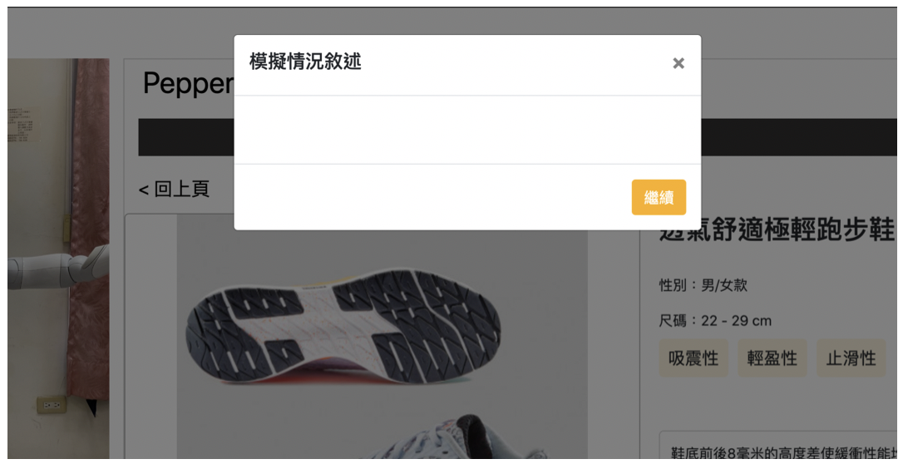

實驗頁面說明
1. 以下為主要實驗畫面，請操作黃色區域畫面並觀看影片中機器人所呈現的行為與說話內容。
影片載入完成後預設為自動播放，也可以自行點選播放或是重複觀看。
🙏🙏請耐心觀看完整段影片的內容，再進行下一步操作🙏🙏

2. 過程中，將會透過文字敘述來模擬線下購物的使用情況。
功能說明
為了模擬在實體商店內選擇商品的情況，按下「尋找商品」按鈕可以獲得商品位置，並假設使用者有意願購買該雙鞋子，並將它拿在手上，而後續將會以拿在手上的鞋子進行購物流程。
因此按下「尋找商品」按鈕後，為模擬情況消費者離開機器人前往取得商品，而機器人會自動回到功能頁面。